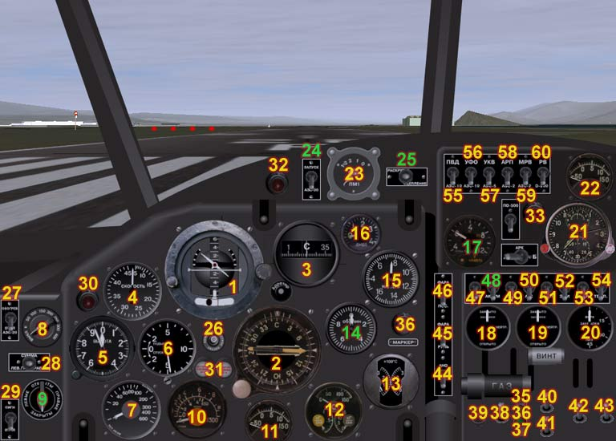

This is a model of the legendary Russian Antonov AN-2. Its first flight was in 1947 and some aircraft are still in use today.
The original model for Microsoft Flight Simulator was written in 2005 by Anton Nikolaev. His model became extremely popular within the Russian flight simulator community. This model for FlightGear is published under the GPL with the permission of the original author. The 3D model for FGFS was converted from MSFS by original techniques, and the textures and sounds were taken "as is", without modification. This port to FGFS, the 2D panel, FDM and other systems were remade by Yurik V. Nikiforoff, May - Nov 2006.
There are 8 liveries for model. The model does not have an animated 3D cabin, there is only a 2D panel.
You must use the devel version (post 0.9.10 release) of FlightGear with this model. You can download a precompiled Win32 devel version of FlightGear from ftp.megasignal.com/pub/devel

Switches and instruments
1. Attitude indicator AGK-47 B.
2. Magnetic (gyroinduction) compass GIK-1 with ADF indication.
3. Gyrocompass GPK-48.
4. Airspeed indicator US-450.
5. Altimeter UVO.
6. Variometer VAR-10.
7. Radio altimeter RV-UM.
8. Warning altitude selector of RV-UM.
9. Fuel selector. Left, right, both tank or cutoff fuel.
10. Fuel level indicator SBESS-1447.
11. Intake air thermometer. Heating of intake air not implemented yet,
so the gauge shows outboard temperature.
12. Engine EMI-3K gauge. Fuel pressure meter, oil pressure and oil
temperature indicator.
13. Cylinder head thermometer TCT-2.
14. Tachometer TE-45.
15. Manifold pressure meter MV-16u
16. Ammeter A-1. It measures the main generator current.
17. Volt-ammeter VA-3. It measures battery voltage and current.
18. Position of oil cooler damper.
19. Position of engine air damper. This gauge is absent on the real
plane, the pilot would normally control the air dampers position visually.
20. Flaps position gauge.
21. ACHS-2 air clock. Extended scale of flight timers not implemented
because gauge is so small.
22. Outboard thermometer TUE-48.
23. Magneto switch PM-1.
24. Main starter switch.
25. Starter selector: [spinup] - [start].
26. GIK-1 compass fast adjust button.
27. Pilot cabin window heat switch. Not implemented yet.
28. Fuel meter selector: [left] - [both] - [right] fuel tank level.
29. Audio alarm switch - min fuel level and min altitude. Not implemented
yet.
30. Min altitude lamp - RV-UM altimeter.
31. Left and right fuel tank min level lamp. Work only if fuel meter
SBESS-1447 is serviceable. Min level is 50 l of fuel.
32. Charge battery lamp. Off if generator charge battery.
33. PO-500 alternator failure lamp.
34. Marker beacon lamp.
35. Rudder trimmer neutral position lamp.
36. Elevator trimmer neutral position lamp.
37. Aileron trimmer neutral position lamp.
38. Elevator trimmer switch.
39. Flaps button.
40. Rudder trimmer switch.
41. Aileron trimmer switch.
42. Oil cooler damper switch.
43. Cylinder head damper switch.
44. Nav lights switch.
45. Taxi light switch. Works only in patched sim.
46. Landing light switch. Works only in patched sim.
47. Main generator switch.
48. Main battery switch.
49. GIK-1 alternator switch.
50. AGK-47B alternator switch.
51. Fuel meter SBESS-1447 switch.
52. EMI-3K gauge switch.
53. Flaps gauge switch.
54. Thermometers TUE-48 switch.
55. Airspeed indicator heat switch.
56. Panel UV light switch.
57. COM radio switch.
58. ADF radio switch.
59. Marker beacon switch.
60. Radio altimeter RV-UM main switch.
61. Throttle handle.
62. Propeller pitch handle.
63. Standby/operate selector for ADF.
An-2 keys
The model simulates the AN-2's inertial starter. It allows the engine to be started even if the main battery is full discharged. In the real aircraft, there is a handle that allows the starter flywheel to be spun up from within the cargo cabin. Usually, the flywheel is spun up by an electric motor, prior to starting the engine.
Start procedure
1. Turn on the electrical supply to the starter motor with the main battery switch [48] and the starter switch [24]. A red "generator failure" lamp will light, just like in a car. Turn on the fuel selector [9].
2. To spin up the starter flywheel, move the starter selector switch [25] to the left (start) position and hold it while the flywheel spins up. As the flywheel speed is increasing, the current consumption as indicated by the VA-3 ammeter [17] will decrease from a maximum value to around zero, at which time the flywheel will be spinning fast enough. During the approximately 7 seconds that this takes, you will be able to hear flywheel spinning up.
3. Apply the spinning flywheel to the engine crankshaft by moving the starter selector switch [25] to the right position and holding it. Watch the tachometer instrument TE-45 [14]. When the engine speed is above 550 rpm, release the starter selector [25] and turn off the starter switch [24]. If all goes well, the engine should remain running.
There is a problem with the inertial starter in this model; there is not enough power to spin the engine shaft with the large propeller attached - As I understand it, this is because of a limitation in JSBsim. I have read about it in the devel list, but there is no fix yet. Because of this limitation, starting with the inertial starter may not be reliable.
You may completely bypass the inertial starter by editing the file 'an2-set.xml' to remove the section that begins with "<!--Unbind spacebar & print help about starter procedure-->". This will allow you to crank the engine by pressing the spacebar.